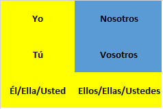

陈述式现在时
陈述式现在时在英语中直接对应是一般现在时，跟英语一般现在时的用法完全一致。或者可以说，任何英语的一般现在时的表达，对应到西班牙语都是陈述式现在时：
Hablo español. -> I speak Spanish.
¿Juegas al fútbol? -> Do you play football?
但是，在日常口语中也常用陈述式现在时来表达英语中的现在进行时的意思（通常联系上下文来理解），例如：
Ahora mismo hablo español. -> Right now, I am speaking Spanish.
陈述式现在时的动词需要根据主语人称来变位，例如动词hablar（speak）在不同人称之后的变为如下。
| 西班牙语 | 英语 |
|---|---|
| Yo hablo español | I speak Spanish. |
| Tú hablas español | You speak Spanish. |
| Él / Ella habla español | He/She speaks Spanish. |
| Nosotros hablamos español | We speak Spanish. |
| Ellos / Ellas hablan español | They speak Spanish. |
注意：按照之前提到的，我们在本教程所有的变位中都将省去第二人称复数vosotros的变位。
最标准的动词变位规则是将动词原型的词尾（一般是-ar/-er/-ir）按照人称替换为相应的变位词尾。标准的词尾替换如下（表中空格表示与左侧相同）：
| -AR | -ER | -IR | |
|---|---|---|---|
| ejamplo: | hablar | comer | vivir |
| Yo | -o | - | |
| Tú | -as | -es | |
| Él/Ella/Usted | -a | -e | |
| Nosotros | -amos | -emos | -imos |
| Ellos/Ellas/Ustedes | -an | -en |
但是，西班牙语存在大量不规则或“半规则”的变位形式，这是我接下来要讲解的重点。
我将陈述式现在时的全部变位规则浓缩到下面这张表当中。只要记住了这张表，就记住了陈述式现在时的全部变位规则（包括不规则部分）。
接下来我们将逐条讲解这张表格中的每一条具体规则。
1. 完全不规则动词
陈述式现在时总共有8个完全不规则的变位动词，全部都是高频动词：
| Ser (be) | Estar (be) | Haber (have) | Ir (go) | Dar (give) | Ver (see) | Saber (know) | Caber (fit) | |
|---|---|---|---|---|---|---|---|---|
| Yo | Soy | Estoy | He | Voy | Doy | Veo | Sé | Quepo |
| Tú | Eres | Estás | Has | Vas | Das | Ves | Sabes | Cabes |
| Él / Usted | Es | Está | Ha | Va | Da | Ve | Sabe | Cabe |
| Nosotros | Somos | Estamos | Hemos | Vamos | Damos | Vemos | Sabemos | Cabemos |
| Ellos / Ustedes | Son | Están | Han | Van | Dan | Ven | Saben | Caben |
其实这8个动词也并非完全无规则，可以按照下表进一步“正则化”。其中绿色格子里面都是标准规则，黄色格子表示“局部规则”或者小变动，只有橙色部分才是完全无规则。

Ser v.s. Estar
从上表可以看出英语的系动词be在西班牙语中对应了两个单词：ser和estar。它们分别表示两种不同的“是”。Ser表述的是主语的内禀属性、固定属性、永久属性，而estar表述的是主语在语句中所处时刻的当时状态。如果你对计算机编程语言有所了解，那么ser表达的类似于常量，而estar表达的类似于变量。
有一个口诀帮大家快速记忆两者用法的区别：
| SER | ESTAR |
|---|---|
| DOCTOR | PLACE |
| Description (描述) Occupation (职业) Characteristic (特征) Time (时间) Origin (产地) Relationship (关系) |
Position (位置) Location (地点) Action (正在进行的动作 - 进行时) Condition (状况) Emotion (情绪) |
大家可以通过以下对比来体会两者的差别：
| 示例 | 表达含义 | 解析 | |
|---|---|---|---|
| Ser | Yo soy profesor. | I am a teacher. 我是老师。 |
职业/身份 (这是我的一部分) |
| Estar | Yo estoy enfermo. | I am sick. 我生病了。 |
健康状态 (暂时的，会改变) |
| Ser | Ella es inteligente. | She is smart. 她很聪明。 |
固有特质 (性格描述) |
| Estar | Ella está triste. | She is sad. 她很伤心。 |
情绪 (暂时的心情) |
| Ser | Nosotros somos de China. | We are from China. 我们要来自中国。 |
国籍/出处 (不可改变的根源) |
| Estar | Nosotros estamos en Nueva York. | We are in New York. 我们在纽约。 |
当前物理位置 (GPS坐标) |
| Ser | Son las tres. | It is 3 o'clock. 现在是三点。 |
时间 (时间属于定义范畴) |
| Estar | El libro está en la mesa. | The book is on the table. 书在桌子上。 |
物体位置 |
下面是ser和estar接同一个形容词但是表达不同意思的对比示例：
| Ser - 本质/定义 | Estar - 状态 | 核心区别 |
|---|---|---|
| Soy feliz. (我是一个生性快乐的人) I am a happy person. |
Estoy feliz. (我现在很高兴) I am happy (right now). |
性格 vs. 心情 前者定义你的天性，后者描述当下的情绪 |
| Eres guapo. (你长得很帅) You are handsome. |
Estás guapo. (你今天打扮得很帅) You look handsome (today). |
长相 vs. 观感 前者是对颜值的评价，后者是对当前状态的赞美 |
| Es nervioso. (他是个神经质/易焦虑的人) He is a nervous person. |
Está nervioso. (他现在很紧张) He is nervous. |
个性 vs. 状态 前者指性格敏感焦虑；后者指当下感到紧张 |
甚至可以在一句话里面在ser和estar后面同时用相反的形容词，例如：
Soy feliz, pero hoy no estoy feliz.
(I am a happy person, but I am not happy today.)
Go-verbs
这一组我们称之为go-verbs的动词总共有13个，它们的yo变位最后都是接-go词尾的，而其它变位则跟随标准规则或者”半标准规则“进行。
Boot-verbs
接下来是一大类我们称之为boot-verbs（靴子动词），在它们除nosotros/vosotros之外的变位，我们在词根中要进行元音替换。
之所以叫boot-verbs是因为涉及到的变位是图中黄色部分，像一个靴子，所以叫boot verbs.

e -> ie
o -> u
e -> i
Z-verbs
Z-verbs是所有的以-cer/-cir结尾的动词，对它们的yo变位，我们要把最后音节的辅音c替换掉：